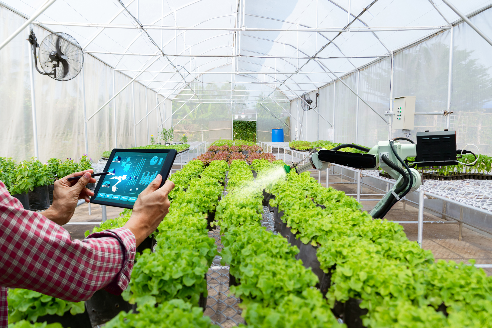
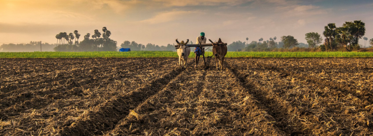

11 November,2022
Smart Farming
Smart Farming is focused on the use of data acquired through various sources (historical, geographical, and instrumental)
in the management of farm activities.echnologically advanced doesn’t essentially mean that it is a smart system.
Smart agriculture technologies differentiate themselves through their ability to record the data and make sense of it.
Smart farming employs hardware (IoT) and software (Software as a Service or SaaS) to capture the data and give actionable
insights to manage all the operations on the farm, both pre-and post-harvest.The data is organized, accessible all the time,
and full of data on every aspect of finance and field operations that can be monitored from anywhere in the world.

4 December,2022
Traditional Farming
Traditional agriculture is based on treating the soil and plants with products that are more likely
than not noxious, and more likely than not synthetically produced in a laboratory.These products
are used to prevent disease or pests from blighting the plant.dd to this the problems of soil degradation,
transportation of food to regions where it can't be grown locally, and the pollution caused by fertilizers
and pesticides, and we have a genuine crisis on our hands.there are two divisions of agriculture,
subsistence and commercial, which roughly correspond to the less developed and more developed regions.

21 December,2022
Pesticides
Pesticides are used to protect crops against insects, weeds, fungi and other pests. Pesticides are potentially toxic to
humans and can have both acute and chronic health effects, depending on the quantity and ways in which a person is exposed.
Many of the older, less costly (off-patent) pesticides, such as dichlorodiphenyltrichloroethane (DDT) and lindane, can
remain for years in soil and water. These chemicals have been banned by countries which signed the 2001 Stockholm Convention,
an international treaty that aims to eliminate or restrict the production and use of persistent organic pollutants.
World Health Organization(WHO) has two objectives in relation to pesticides:
1.To ban the pesticides that are most toxic to humans, as well as pesticides that remain for longest time in environment.
2.To protect public health by setting maximum limits for pesticide residues in food and water.